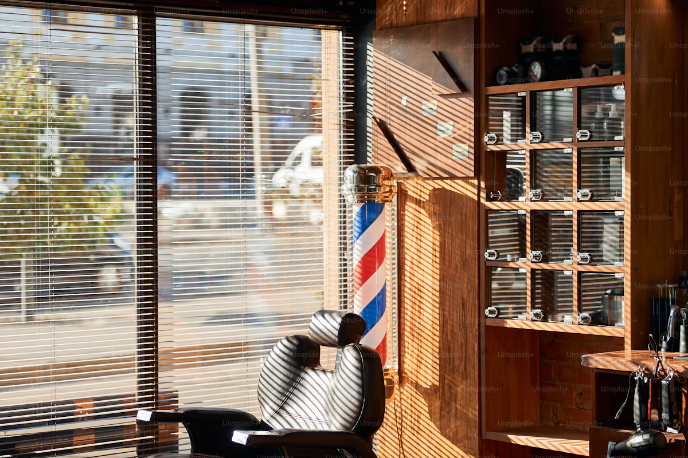
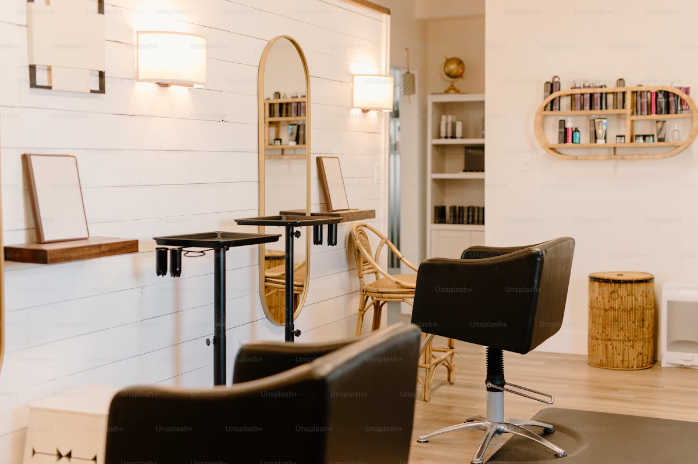
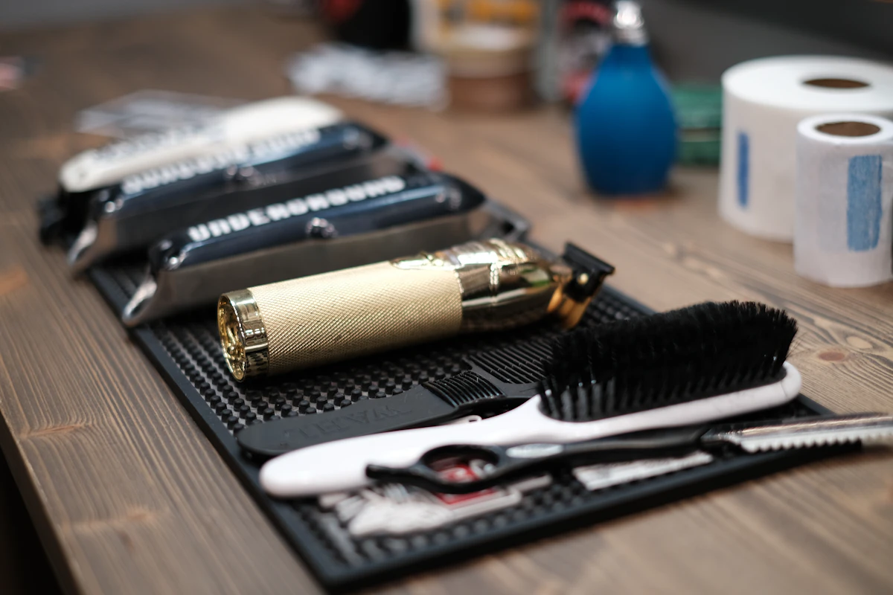

Précision
Pas de coupe expédiée. Un dégradé propre demande quinze minutes de finition à la tondeuse, et on les prend. Si on dépasse l'horaire prévu, on dépasse — on ne raccourcit pas le geste.
Trois personnes, un fauteuil principal, deux postes secondaires. Une seule règle : on ne fait que ce qu'on sait faire bien.

Maxime a passé son CAP coiffure à Nantes, puis son Brevet Professionnel dans la foulée. Il a travaillé cinq ans dans des salons mixtes de la région — Saint-Herblain d'abord, Nantes ensuite — avant de se concentrer sur la clientèle masculine et le geste du barbier.
Le salon a ouvert rue de Verdun en mars 2019. L'idée tenait en une phrase : réunir au même endroit la coupe homme moderne et le rasage à la lame qu'on ne trouve plus partout. Pas de chichi, pas de carte tape-à-l'œil, juste deux gestes faits avec attention.
Aujourd'hui, l'équipe est passée à trois. Deux collaborateurs ont rejoint Maxime : l'un formé chez un barbier nantais reconnu, l'autre sorti d'un BP en alternance dans le pays castelbriantais. Tous trois partagent les mêmes outils — ciseaux japonais, lames droites, cires solides.
Le salon reçoit en moyenne trente rendez-vous par jour. Les habitués viennent du quartier Decré, mais aussi de Saint-Herblain et d'Orvault. Le téléphone reste ouvert pour les urgences ; le reste se réserve en ligne.
Trois règles simples qui structurent la journée au salon. Rien d'original, mais on s'y tient.
Pas de coupe expédiée. Un dégradé propre demande quinze minutes de finition à la tondeuse, et on les prend. Si on dépasse l'horaire prévu, on dépasse — on ne raccourcit pas le geste.
Cinq minutes de diagnostic avant chaque rendez-vous. On regarde la matière, le visage, le contexte. On dit non quand une coupe ne va pas tenir. On dit oui quand on est sûr.
Lames jetables après chaque rasage. Capes lavées tous les soirs. Outils nettoyés à l'alcool entre deux clients. C'est la base, et c'est non négociable au salon.
Le salon tient sur 60 m², avec un fauteuil principal au centre, deux postes secondaires sur le côté droit, un coin barbier au fond. Mur de briques peintes, miroirs encadrés laiton, banquette de cuir tabac pour patienter.



Premier rendez-vous, refonte complète ou simple entretien — réservation en ligne ou par téléphone.
Prendre rendez-vous